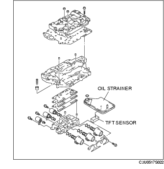

• The TFT sensor, which is installed in the oil strainer, detects the ATF temperature in the oil pan, and sends the control signal to the PCM. The PCM controls the driving pattern selection and the TCC based on the signal from the TFT sensor.
